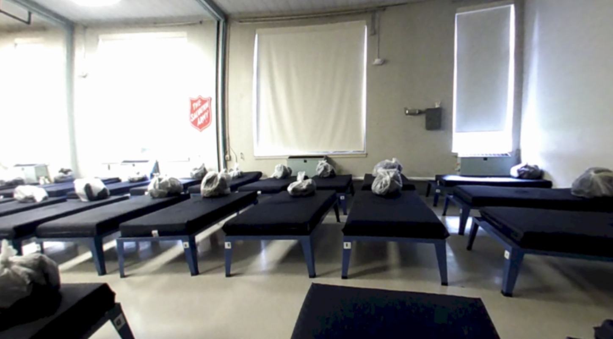

Amy and Alison refilmed the eviction scene with a tripod. Alison uploaded these videos into the eviction scene videos and added audio snippets over the videos. Amy led the coordination with shelters and other contacts. This included confirming dates to film the Harborview Hall emergency shelter this week and a non-emergency shelter next Tuesday. Aaron and Erika filmed the Harborview Hall shelter on Wednesday.

Erika found audio clips and uploaded the eviction scene videos and audio. Amy focused on finding audio clips and narratives to back our choosing shelters, and hardships faced in shelters scenes.
Aaron restructured the Unity project and updated it to use gaze navigation. He also updated the scripts we use so each project scene (i.e. the park scene) is now one Unity scene, rather than a collection of Unity scenes. This makes our transitions smoother and allows us to use audio over more than one video.

Amy also added a museum scene which will look to extra footage we have of the shelters, other new articles, and actionable items people can take to help the homeless in Seattle. Each of the article will expand on gaze as seen below.

We have a lot of new code this week since we decided to change the navigation of our application. The new project can be found in the Team 6 Repo under the folder FindingSeattleMVPGazeOnly. Things to highlight are: the script FS_Script that handles navigation between scenes and video and audio in scenes, and the various settings for FS_Script that we’ve added to the eviction, morning, and park scenes. The updated videos are too big to upload into our github project. We also added a museum scene which will look to extra footage we have of the shetlers, other new articles, and actionable items people can take to help the homeless in Seattle. Each of the article will expand on gaze as seen below.
Because we were able to film an emergency shelter this week, and will film a non-emergency shelter next week, we want to use these videos to to their best extent. This has caused us to rethink our narrative a bit, since we have been granted access to the various parts of these different types of shelters. Lora Baker of The Salvation Army gave us more information on these two types of shelters, and spoke to us about the process that case workers go through to get people to the more permanent shelters. This process of moving from an emergency shelter to a non-emergency one varies by person, but usually takes 6-12 months. This is an aspect of homelessness that we didn’t know about before, and one that we’re in a position to highlight. We’re now thinking that the story will be of someone waking up in an emergency shelter and having it be the day that they are told they can move into one of the non-emergency shelters. We’re finally at the point of knowing what footage will be available to us, so we’ll finalize our script this weekend. We’re going to try out recording our own snippets to provide a bit more cohesion, as recommended by Ira and Steve.
We also took Aleks’ advice to do gaze-only navigation. This means that we’re dropping the interactive bin experience, and that our app will work on Google Cardboard. We’re super excited that it will work on Google Cardboard since it’s much more accessible that way. We showed a demo of Google Cardboard to the staff at The Salvation Army, and they were very excited about it. This means that our end product will be much more able to use in the real world. We plan to continue allowing for interaction from the user by using gaze at certain highlighted elements to “zoom into” certain objects, or open the door in the eviction scene or play the video on the tv for example.
Amy and Alison will meet with Lora to film the non-emergency shelter, and will upload these scenes into our Unity project. They also will gather resources to add into the last gallery scene of our project, which will include some final thoughts and actionable ways that people can help the homeless population in Seattle. We will also try to get the footage inside the DESC shelter that someone working on a previous VR project there has offered to share with us, and add this into our project and narrative.
Erika will continue to edit sound clips for the various audio we need in the scenes, upload them into our project, and edit the timing of the videos to match them. She will also refilm a video of the park scene that didn’t work out as originally planned.
Amy and Erika will finalize the narrative and audios to be used, combing the usage of quotes and audio from interviews and hand crafted narrative. We plan to have about one minute of narrative for each our scenes that will explain to the user what they are experiencing and motivate the scenes they are being led through.
Aaron will work to improve the fading in and out between the scenes so that we can minimize the loading time between videos, perhaps by stitching videos in the scene so that they can be loaded all at once for scenes such as the shelter that don’t require any interaction from the user.
We are not blocked on any issues, however we weren’t able to meet with Aleks this week so we will try to schedule some time with him to demo our current project and collect any feedback.